Keep every coding agent working, on every machine you own.
herder runs your coding agents across all your machines and accounts, moves the work on when an account hits its limit, and puts every task in your pocket.
curl -fsSL https://herder.sh/install | sh
Linux and Apple silicon Macs · iPhone app in TestFlight · Mac app not notarized yet · free, Apache-2.0
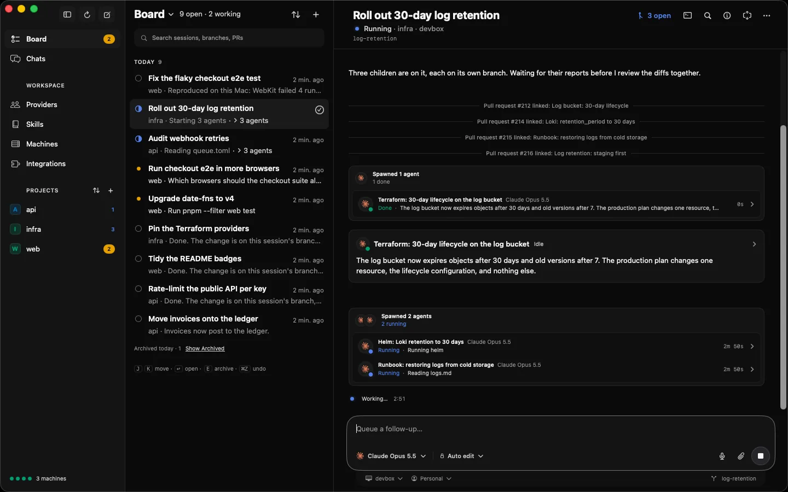
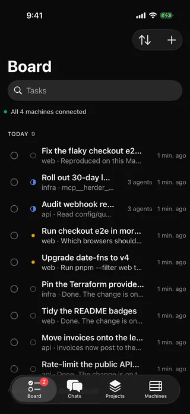
- 4
- coding agents: Claude Code, Codex, Cursor and OpenCode
- 5
- ways in: Mac, iPhone, terminal, Slack and Telegram
- 0
- provider login tokens herder reads, stores or relays
- $0
- free and open source under Apache-2.0
failover
Never blocked by a usage limit.
Add every account you have. When a session hits a limit, herder moves it to the next account of that provider with room left, and the agent carries on where it stopped. With no account left, it waits for the reset and resumes by itself.
how herder switches only after a limit is hit, never ahead of time. Providers shows how much of each account's session and weekly windows is left, and when they reset.
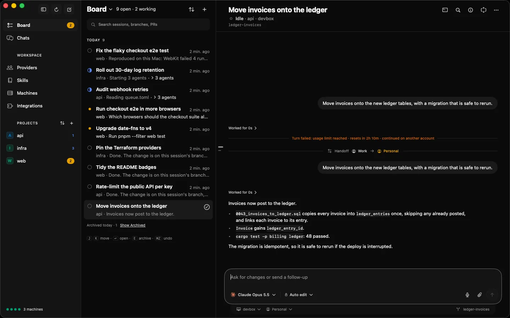
fleet
One fleet, every machine.
Put herder on your Mac, your Linux boxes and your servers, and see them all in one window: what each one runs, its load, its accounts and its provider CLIs. Start each task on the machine that suits it.
how one daemon per machine, paired with herder pair. Providers updates every agent CLI on every machine at once.
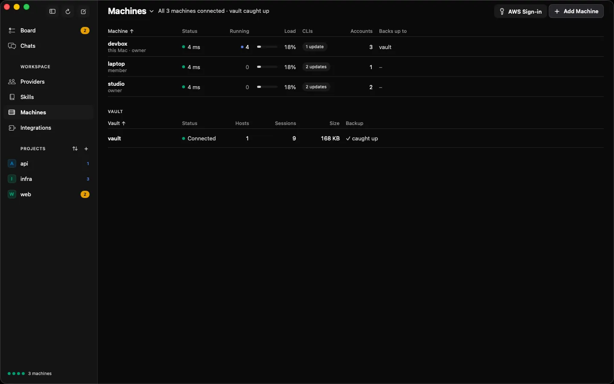
multi-agent tasks
Agents that run agents.
A task's agent can start sub-agents, prompt them, wait for them and answer their questions, and escalates to you only what it can't decide. The Board shows every task on every machine, the ones that need you first, with their sub-agents a click away.
how agents get herder's task tools over MCP. Every sub-agent is a session of its own that you can open, steer or stop.
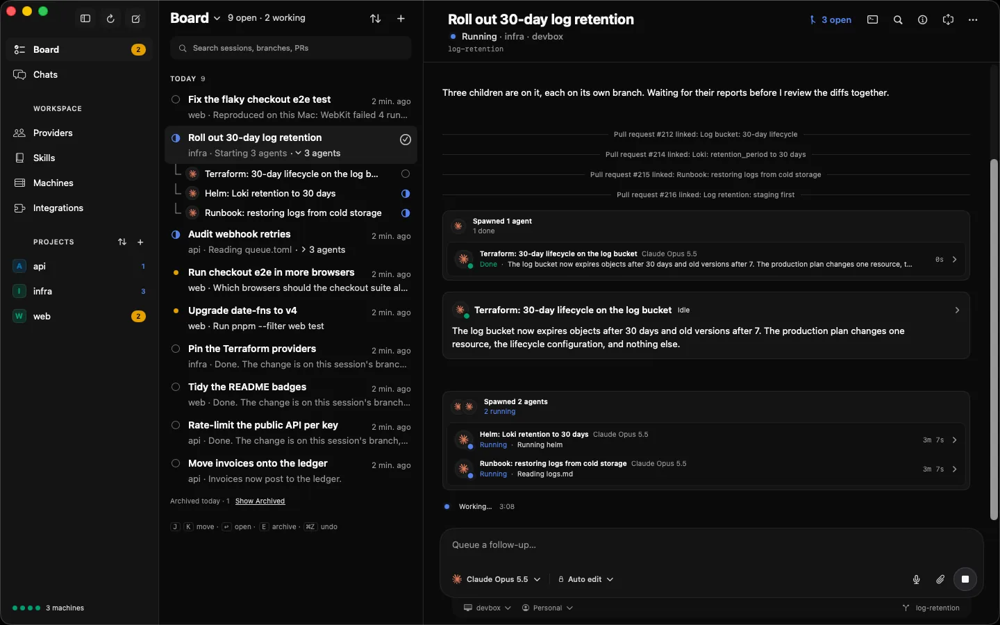
iphone
Answer your agents from your phone.
When an agent asks a question or wants to run a command, it waits for you on the iPhone. Allow, deny or answer, follow any task, and start the next one from wherever you are.
how scan the QR code herder pair prints. The iPhone app is in TestFlight; the terminal UI also works over SSH from a phone.
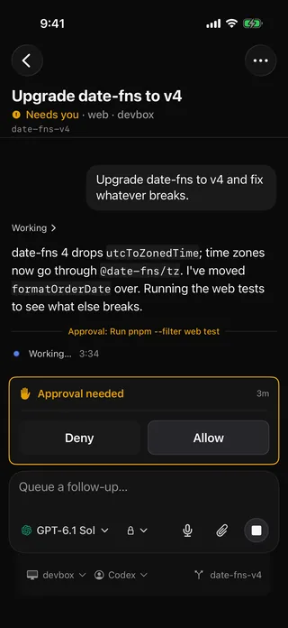
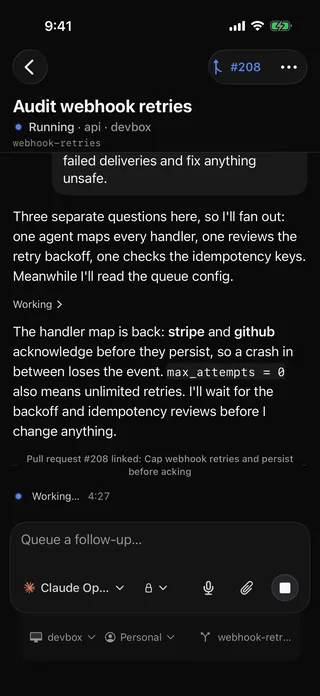
slack and telegram
Your team, in Slack and Telegram.
Mention the bot in a Slack thread and it reads the thread, runs the work on your machines and posts the files it makes back into it. Questions and approvals come to the chat with Allow and Deny. In Telegram, message it or mention it in a group.
how bots run on your own machines. Each person on a bot's allowlist gets switches for DMs, channels and approvals, and no bot opens terminals, logins or settings.
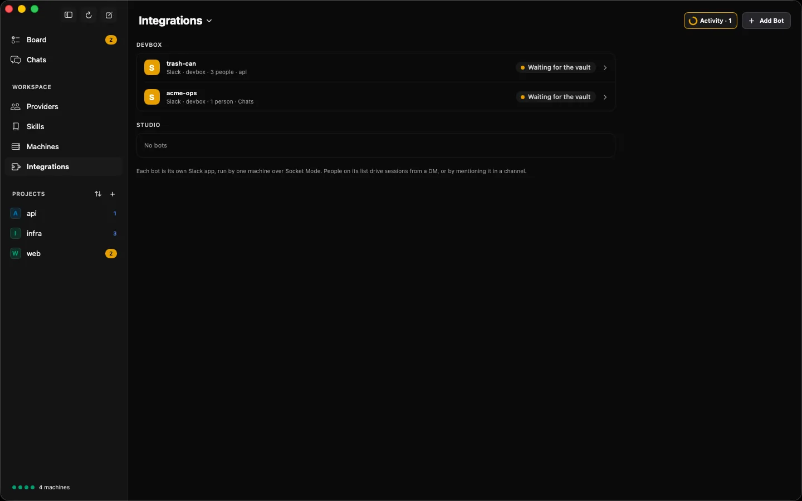
vault
Nothing lost when a machine goes away.
A vault keeps every session of every machine, so history survives a dead laptop and another machine can take a task over. It holds your secrets too: a program an agent runs fetches them, and the agent never sees one.
how run it on Kubernetes with the manifests in the repo, or on any machine with one click in the app or herder vault install.
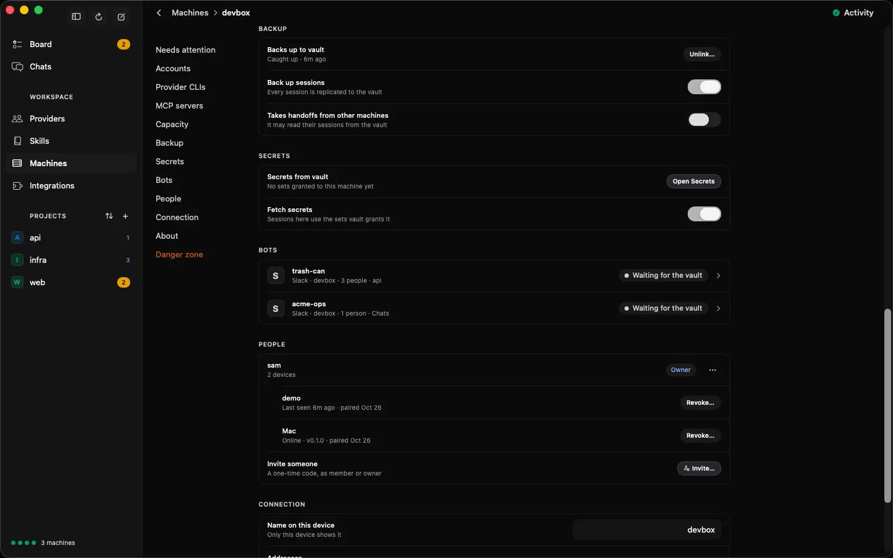
roles and privacy
Share machines, keep your keys.
Invite someone with a one-time code, as a member or an owner. Members drive sessions, while terminals, logins and settings stay with the machine's owners, who can change a role or revoke a device at any time. herder never reads, stores or relays your provider login tokens. You log in with the vendor's own tool, and the login stays where that tool keeps it.
how herder drives each vendor's unmodified CLI, one config dir per account. It is open source, so you can read every line.
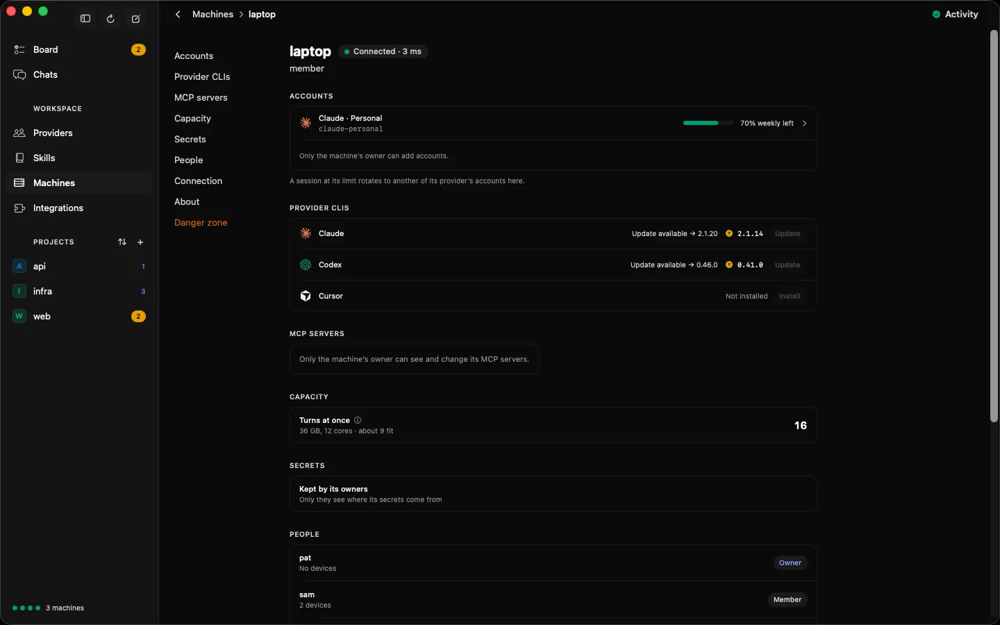
terminal and scripts
Or drive it all from a terminal.
Bare herder opens the terminal UI, over SSH or mosh, on any screen. herder session creates, prompts, waits on and archives sessions, with --json and never a prompt, so scripts and other agents can drive them too.
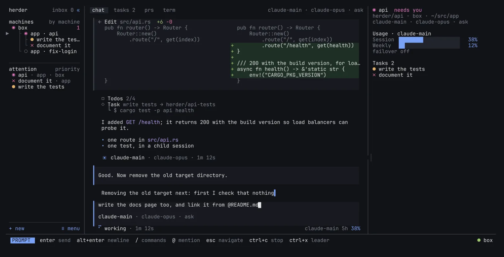
echo "Rate-limit the public API per key" | herder session new --project api
herder session wait <id> --json
herder session status <id> --jsoncompare
herder vs running the CLIs by hand.
| When | By hand | With herder |
|---|---|---|
| An account hits its limit | You wait, or log in to another account and start over | The session moves to the next account and carries on |
| Agents on several machines | An SSH and tmux session per box | Every task on every machine, on one Board |
| An agent asks while you're out | It waits until you're back at that terminal | You answer from your iPhone, Slack or Telegram |
| A machine dies | Its sessions go with it | The vault has every session; another machine takes over |
| Your team wants in | Share a shell, or a login | Members drive sessions, with no shell and no tokens |
get started
Three commands to a herd.
-
01 · install
curl -fsSL https://herder.sh/install | sh herder service installInstalls herder on a Linux box or a Mac and runs its daemon now and at every boot.
-
02 · pair
herder pairPrints a link and a QR code. Scan it with the iPhone app, paste it into the Mac app's Add Machine, or run
herder connect <link>on another computer. -
03 · add an account
herderAdd Account in the app, or n in the terminal UI: the vendor's own login runs on the machine, and herder just shows you its terminal.
faq
Questions.
What is herder?
herder is an open-source tool that keeps coding agents (Claude Code, Codex, Cursor and OpenCode) working across all your accounts and all your machines. A herder daemon on each Linux machine or Mac hosts agent sessions in the vendor's own unmodified CLI, and you watch and steer every session from the herder Mac app, the iPhone app, the terminal UI, or Slack and Telegram.
How do I install herder?
On Linux (x86_64 or arm64) or an Apple silicon Mac, install herder with curl -fsSL https://herder.sh/install | sh. The script downloads the binary, checks its sha256 and puts it in ~/.local/bin/herder. Then herder service install runs the herder daemon now and at every boot (systemd on Linux, launchd on macOS), and herder update moves to the latest release. herder doctor checks the machine and says how to fix what is not ready.
Which coding agents does herder support?
herder supports Claude Code, Codex, Cursor and OpenCode. herder drives each vendor's own unmodified CLI, so the agent behaves exactly as it does when you run it yourself. The Providers page shows which CLI version each machine runs and updates them for you.
What happens when an account hits its usage limit?
herder runs each account under its own config dir, so one machine can hold several Claude or Codex accounts. When a session hits a usage limit, herder moves it to another account of the same provider that has room left, and the agent carries on. herder only switches after a limit is hit, never ahead of time. If no account has room and the reset time is known, the session waits for the reset and carries on by itself. Providers shows how much of each account's windows is used and when they reset.
Does herder see my Claude or OpenAI login tokens?
No. herder never reads, stores, copies or relays provider login tokens. You log in with the vendor's own login flow, which herder runs in a terminal on the machine, and the credentials stay where the vendor's CLI keeps them.
Can herder run agents on several machines?
Yes. Run the herder daemon on each machine, pair them with herder pair, and the apps and the terminal UI show the tasks of every machine on one Board, with each machine's load, accounts and provider CLIs on the Machines page.
What does the herder vault do?
A vault keeps a copy of every session of the machines linked to it, so a session's history survives its machine and another machine can take the session over. It also holds secrets, granted per machine: herder secret run hands them to a program an agent runs, without the agent seeing them. Run the vault on Kubernetes with the manifests in the repository, or on any machine with one click in the app or herder vault install.
Can I use herder from Slack or Telegram?
Yes. A machine can run Slack and Telegram bots. Mention the Slack bot in a thread and it reads the thread, starts a session and posts the files the agent publishes back into the thread; DM a bot or mention it in a channel or group to chat with a session and answer its questions and approvals. Each bot has its own allowlist, with switches per person for DMs, channels and approvals, and never opens terminals, logins or settings. The bot's tokens are secrets in your vault, which the daemon keeps in memory only.
Can I share a machine with my team?
Yes. Invite someone from the machine's People section with a one-time code, as a member or an owner. Members see and drive the machine's sessions, while terminals, provider logins and settings stay with the machine's owners. Only owners can open, attach to or see a terminal.
Is there a herder app for Mac and iPhone?
Yes. The herder Mac app runs on Apple silicon and is a free download from the latest GitHub release. The iPhone app is in TestFlight and not on the App Store yet; until then, you can also run herder over SSH or mosh from a phone SSH app such as Termius or Moshi, and the terminal UI adapts to the narrow screen.
Why does macOS say the herder app can't be opened?
The herder Mac app is not notarized by Apple yet, so Gatekeeper blocks it the first time. Move herder.app to Applications and run xattr -dr com.apple.quarantine /Applications/herder.app, or try to open it once and then choose Open Anyway in System Settings, Privacy & Security.
How much does herder cost?
herder is free and open source under the Apache-2.0 licence. You keep paying your agent providers (Anthropic, OpenAI, Cursor and so on) as you do today; herder adds no fee of its own.
Is herder ready to use?
herder is pre-1.0 and changes quickly, so expect rough edges. Releases are published on GitHub, and bugs and ideas go to GitHub issues at github.com/herder-sh/herder.
Put your agents to work everywhere.
curl -fsSL https://herder.sh/install | sh